Items
Catastrophic Bleeding
| Item | Use | Access Body Part | Use Count | Condition | Weight |
|---|---|---|---|---|---|
|
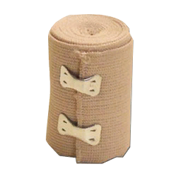 Elastic Wrap |
Wrapping clotted, bandaged and bruised injuries |
 All
|
Single-use |
Body part must have un-wrapped clots, bandages or bruises Body part must not be bleeding |
0.01kg | 0.03lb |
|
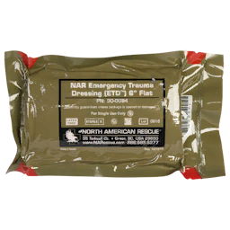 Emergency Trauma Dressing |
Bandaging many bleeding wounds |
All
|
Single-use |
Body part must have bleeding wounds Cannot be used to self-treat |
0.09kg | 0.2lb |
|
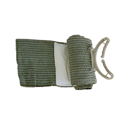 Pressure Bandage |
Bandaging bleeding wounds |
All
|
Single-use | Body part must have bleeding wounds | 0.03kg | 0.06lb |
 Tourniquet Tourniquet
|
Stopping bleeding on limbs |
 Arms
Legs |
Re-usable | 0.05kg | 0.1lb |
Airway Management
| Item | Type | Use | Access Body Part | Use Count | Condition | Weight |
|---|---|---|---|---|---|---|
 ACCUVAC ACCUVAC
|
Airway Suction Device | Clearing airway obstructions |
 Head
|
Re-usable | 0.91kg | 2lb | |
 CricKit CricKit
|
Surgical Airway Kit | Establishing surgical airway |
Head
|
Single-use | 0.11kg | 0.25lb | |
 i-gel i-gel
|
Airway Adjunct | Managing airway collapse and preventing airway obstructions from vomiting |
Head
|
Single-use |
Airway must not have another oral adjunct inserted Airway must be clear of obstructions |
0.09kg | 0.2lb |
 NPA NPA
|
Airway Adjunct | Managing minor to moderate airway collapse |
Head
|
Single-use |
Airway must not have another nasal adjunct inserted Airway must be clear of obstructions |
0.06kg | 0.14lb |
 OPA OPA
|
Airway Adjunct | Managing minor to moderate airway collapse |
Head
|
Single-use |
Airway must not have another oral adjunct inserted Airway must be clear of obstructions |
0.05kg | 0.1lb |
 Emergency Disposable Suction Bag Emergency Disposable Suction Bag
|
Airway Suction Device | Clearing airway obstructions |
Head
|
Single-use | 0.09kg | 0.2lb |
Breathing
| Item | Type | Use | Category | Access Body Part | Use Count | Condition | Weight |
|---|---|---|---|---|---|---|---|
|
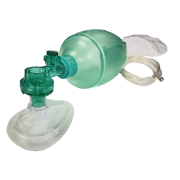 Bag-Valve-Mask |
Manual Ventilation Device | Providing manual oxygenation |
|
Head
|
Re-usable | Must not be blocked by CPR or another BVM | 0.54kg | 1.2lb |
|
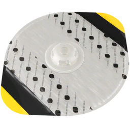 Chest Seal |
Vented Occlusive Dressing | Treating chest injuries |
|
 Torso
|
Single-use | Must have wounds that may cause a chest injury | 0.09kg | 0.2lb |
|
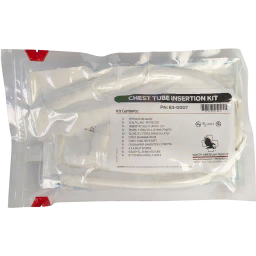 Chest Tube Kit |
Chest Injury Treatment Kit | Managing hemothorax |
|
Torso
|
Single-use | Must have performed thoracostomy incision | 0.18kg | 0.4lb |
|
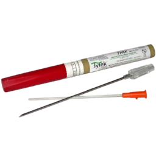 NCD Kit |
Chest Injury Treatment Kit | Treating tension pneumothorax |
|
Torso
|
Single-use | Must have wounds that may cause a chest injury | 0.05kg | 0.1lb |
|
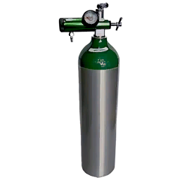 Portable Oxygen Tank |
Portable Oxygen Source | Providing oxygen to BVM |
|
Head
|
Re-usable | 0.91kg | 2lb | |
|
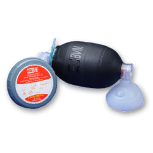 Pocket BVM |
Manual Ventilation Device | Providing manual oxygenation |
|
Head
|
Re-usable | Must not be blocked by CPR or another BVM | 0.23kg | 0.5lb |
|
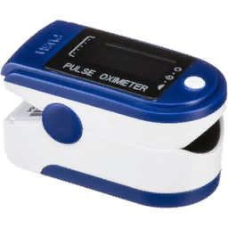 Pulse Oximeter |
Vitals Monitoring Device | Measuring vitals |
|
 Arms
|
Re-usable | 0.05kg | 0.1lb | |
 Stethoscope Stethoscope
|
Auscultating Device | Auscultating the lungs |
|
Torso
|
Re-usable | 0.54kg | 1.2lb | |
|
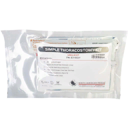 Thoracostomy Kit |
Chest Injury Treatment Kit | Performing thoracostomy |
|
Torso
|
Single-use | Must have wounds that may cause a chest injury | 0.18kg | 0.4lb |
Circulation
| Item | Type | Use | Category | Access Body Part | Use Count | Condition | Weight |
|---|---|---|---|---|---|---|---|
 14g IV 14g IV
|
IV Catheter | Establishing intravenous access route |
|
Arms
Legs |
Single-use | IV placement must not conflict with applied pressure cuff | 0.02kg | 0.05lb |
|
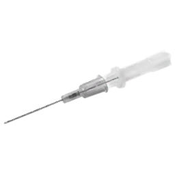 16g IV |
IV Catheter | Establishing intravenous access route |
|
Arms
Legs |
Single-use | IV placement must not conflict with applied pressure cuff | 0.01kg | 0.02lb |
|
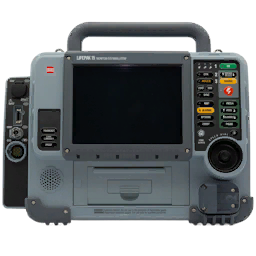 AED |
Defibrillator And Monitor | Treating cardiac arrest, monitoring vitals |
|
 Head
Torso Arms |
Re-usable |
May only be connected to one patient at a time AED Pressure cuff placement must not conflict with inserted IV |
1.81kg | 4lb |
|
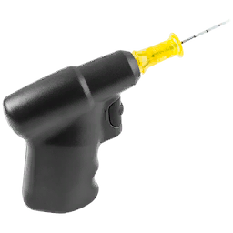 EZ-IO |
IO Access Drill | Establishing intraosseous access route |
|
Arms
Legs |
Single-use | 0.01kg | 0.02lb | |
|
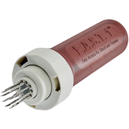 FAST1 IO |
IO Access Needle | Establishing intraosseous access route |
|
Torso
|
Single-use | 0.01kg | 0.03lb | |
|
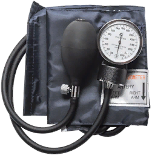 Pressure Cuff |
Blood Pressure Measuring Device | Measuring blood pressure |
|
Arms
|
Re-usable |
Arm must not already have applied pressure cuff Pressure cuff placement must not conflict with inserted IV |
0.18kg | 0.4lb |
 Syringe
(1ml | 3ml | 5ml | 10ml) Syringe
(1ml | 3ml | 5ml | 10ml)
|
Medication Administration Device | Pushing and injecting liquid medication |
|
 Torso
Arms Legs |
Re-usable |
Must have filled medication Must have IV/IO access to push medication intravenously |
0.02kg | 0.05lb 0.03kg | 0.06lb 0.03kg | 0.07lb 0.04kg | 0.09lb |
Fluid Transfusion
| Item | Type | Use | Condition | Weight |
|---|---|---|---|---|
|
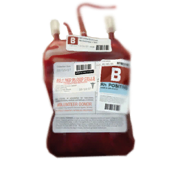 Blood Bag (250ml | 500ml | 1000ml) |
Fluid Bag | Replacing lost blood volume | Must have IV/IO access |
0.11kg | 0.25lb 0.23kg | 0.5lb 0.45kg | 1lb |
|
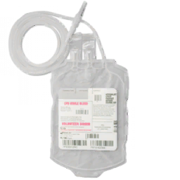 Field Blood Transfusion Kit (250ml | 500ml) |
Blood Transfusion Kit | Transfusing fresh blood from donor into fluid bag | Must have IV access |
0.05kg | 0.1lb 0.1kg | 0.2lb |
|
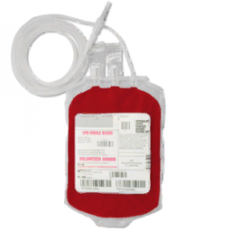 Fresh Blood Bag (250ml | 500ml) |
Fluid Bag | Transfusing fresh blood to patient | Must have IV/IO access |
0.11kg | 0.25lb 0.23kg | 0.5lb |
|
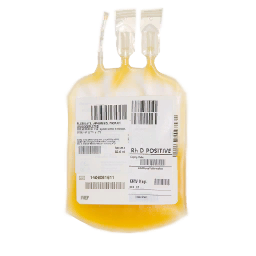 Plasma Bag (250ml | 500ml | 1000ml) |
Fluid Bag | Replacing lost blood volume | Must have IV/IO access |
0.11kg | 0.25lb 0.23kg | 0.5lb 0.45kg | 1lb |
 Saline Bag
(250ml | 500ml | 1000ml) Saline Bag
(250ml | 500ml | 1000ml)
|
Fluid Bag | Replacing lost blood volume | Must have IV/IO access |
0.11kg | 0.25lb 0.23kg | 0.5lb 0.45kg | 1lb |
Medication
Liquid Medication
Liquid Medications come in pre-filled single use vials, size of vial and concentration of the contents depend on the specific medication and its intended use.
Liquid medication is administered intramuscularly or intravenously with syringes, with certain medications only having a theraputic effect if administered via specific route.
| Medication | Use | Access | Contents | Concentration | Dose Range | Onset | Peak | Duration | HR | BP | RR | Pain Relief | Nausea |
|---|---|---|---|---|---|---|---|---|---|---|---|---|---|
 Adenosine Adenosine
|
IV Only | 12mg/4ml | 3mg/ml | 6mg | <1m | ~25s | <2m | - - - | |||||
|
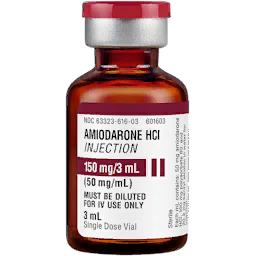 Amiodarone |
Treatment of shockable cardiac arrest (VT/VF) | IV Only | 150mg/3ml | 50mg/ml | 300mg, up to 2200mg | <10s | ~8m | ~12m | - - | - - | |||
|
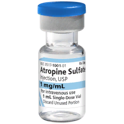 Atropine |
Treating nerve agent exposure, increasing heart rate | IV/IM | 1mg/1ml | 1mg/ml |
(Nerve Agent Exposure) 2-4mg initial, more if required (Bradycardia) >1mg |
<5s | <30s | ~10m | ~15m | + + | + | |||
|
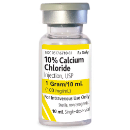 Calcium Chloride |
Managing low calcium after blood transfusion | IV Only | 1g/10ml | 100mg/ml | 1g after first unit, then 1g after every 4 units of blood | <15s | ~5m | ~10m | + | ||||
|
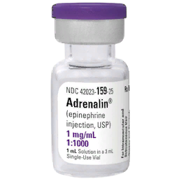 Epinephrine |
Cardiac Arrest | IV/IM | 1mg/1ml | 1mg/ml | 1mg | <5s | <30s | ~3m | ~5m | ~6m | + + | + + | + + | ||
|
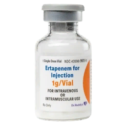 Ertapenem |
Managing wound infection, requirement for Evacuation | IV/IM | 1g/3.2ml | 312.5mg/ml | 1g | <5s | <30s | ~10m | ~15m | ~15m | ~20m | |||||
|
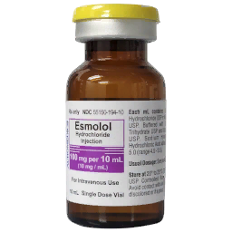 Esmolol |
Lowering heart rate for a short time | IV Only | 100mg/10ml | 10mg/ml | 0.25-0.5mg/kg | <20s | ~4m | ~5m | - - | ||||
|
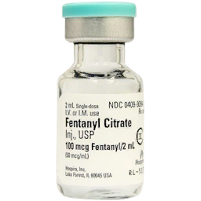 Fentanyl |
Managing severe pain | IV/IM | 100mcg/2ml | 50mcg/ml |
(IV) 0.5-1mcg/kg or 38-100mcg (IM) 0.7-1mcg/kg or 52-100mcg |
<10s | <30s | ~14m | ~15m | ~16m | ~20m | - - | - - | - - | VERY STRONG | |
|
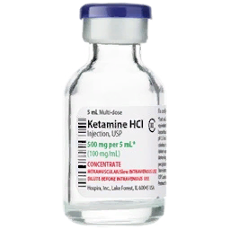 Ketamine |
Managing severe pain with compromised breathing ability | IV/IM | 500mg/10ml | 50mg/ml |
(IV) 0.1-0.2mg/kg or 7.5-21mg (IM) 0.4-0.8mg/kg or 30-84mg |
<5s | <20s | ~9m | ~10m | ~11m | ~15m | STRONG | SIGNIFICANT | |||
|
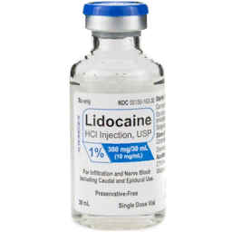 Lidocaine |
(IV) Treatment of shockable cardiac arrest (VT/VF) (IM) In advance of painful procedures |
IV/IM | 100mg/5ml | 20mg/ml |
(IV) 1mg/kg, up to 3mg/kg (IM) 50-100mg |
<5s | <10s | ~6m | ~4m | ~10m | ~10m | (IV) - - | (IV) - - | MODERATE | ||
|
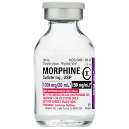 Morphine |
Managing severe pain | IV/IM | 10mg/2ml | 5mg/ml |
(IV) 0.05-0.1mg/kg or 3.75-10mg (IM) 0.07-0.1mg/kg or 4.25-10mg |
<25s | <2m | ~15m | ~20m | ~21m | ~30m | - - | - - | - - | STRONG | |
|
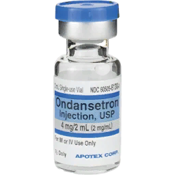 Ondansetron |
Managing nausea and vomiting caused by medications | IV/IM | 4mg/2ml | 2mg/ml | 4mg, up to 8mg | <15s | <45s | ~10m | ~12m | ~12m | ~15m | - | DOSE-BASED | |||
|
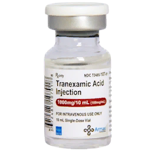 TXA |
Managing severe internal or external bleeding | IV Only | 1g/10ml | 100mg/ml | 1-2g | <15s | ~10m | ~15m | - |
Packaged Medication
Packaged Medication come in various shapes or inside devices with a pre-designated dose of the medication.
These medication devices are designed to be easily self-administered or given in an emergency.
| Medication | Use | Access | Access Body Part | Use Count | Recommended Dose | Onset | Peak | Duration | HR | BP | RR | Pain Relief |
|---|---|---|---|---|---|---|---|---|---|---|---|---|
|
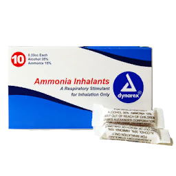 Ammonia Inhalant |
Waking up patients | IN |
Head
|
8x | <3s | <6s | <40s | + | + + | |||
 ATNA Autoinjector ATNA Autoinjector
|
Treating nerve agent exposure | IM |
Torso
Arms Legs |
Single-use | 3 injections initially, more if required | <30s | ~10m | ~15m | + + | + | ||
 Epinephrine Autoinjector Epinephrine Autoinjector
|
IM |
Torso
Arms Legs |
Single-use | <30s | ~4m | ~7m | + | + | + | |||
|
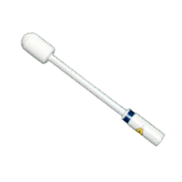 Fentanyl Lozenge |
Managing severe pain | BUC |
Head
|
Single-use | 1 lozenge | <2m | ~10m | ~15m | - | - | - - | VERY STRONG |
|
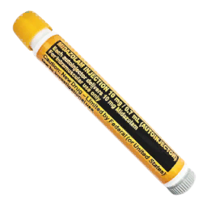 Midazolam Autoinjector |
Managing seizure activity caused by nerve agent exposure | IM |
Torso
Arms Legs |
Single-use | 1 injection | <30s | ~15m | ~20m | - | - | ||
|
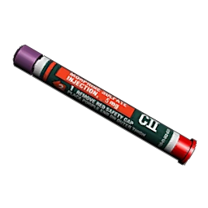 Morphine Autoinjector |
Managing moderate to severe pain | IM |
Torso
Arms Legs |
Single-use | 1 injection | <2m | ~20m | ~30m | - - | - - | - - | STRONG |
| Naloxone Spray | Reversing opioid overdose | IN |
Head
|
Single-use | 1-2 uses | <3s | ~2m | ~6m | ||||
|
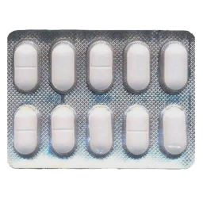 Paracetamol |
Managing mild to moderate pain | PO |
Head
|
10x | 1-2 pills | <4m | ~15m | ~50m | MILD | |||
|
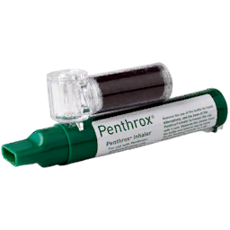 Penthrox Inhaler |
Managing moderate to severe pain for a short time | INH |
Head
|
8x | 1-3 uses | <3s | <90s | ~4m | MODERATE |
Disability
| Item | Type | Use | Category | Access Body Part | Use Count | Condition | Weight |
|---|---|---|---|---|---|---|---|
|
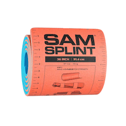 SAM Splint |
Malleable Splint | Stabilizing fractures |
|
Arms
Legs |
Single-use | Limb must have wounds that may cause a fracture | 0.02kg | 0.05lb |